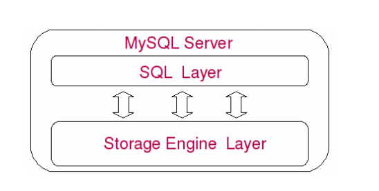
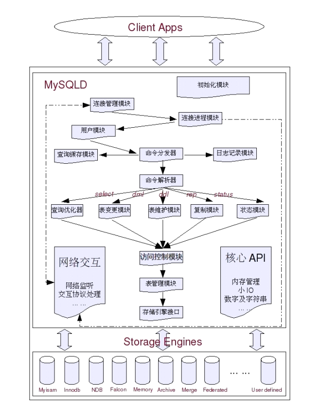

一、MySQL基本介绍
二、MySQL架构组成
A.MySQL物理文件组成
1.日志文件：
- 错误日志：--log-error[=file_name]，可以利用FLUSH LOGS命令来备份并重新记录
- 二进制日志：Binary Log，也就是binlog，--log-bin[=file_name]
- 查询日志：querylog，--log[=file_name]，记录所有的query，对性能影响大
- 慢查询日志：slow query log，--log-slow-queries[=file_name]，记录了语句执行的时刻，所消耗的时间等
- innodb的在线redo日志：innodb redo log，提供事务安全性
2.数据文件：
- .frm文件，与表相关的元数据（meta）信息，包括表结构的定义信息等
- .myd文件，MyISAM存储引擎专用，存放MyISAM表的数据
- .myi文件，存放MyISAM表的索引相关信息
- .ibd和ibdata文件，存放Innodb数据的文件，.ibd用于独享表空间的存储方式，.ibdata用于共享表空间的存储方式
3.Replication相关文件：
- master.info文件，存在于Slave端的数据目录下，存放了Slave的Master端的相关信息
- relay log和relay log index，mysql-relay-bin.xxxxn文件用于存放Slave端的I/O线程从Mater端所读取到的Binary Log信息，mysql-relay-bin.index文件记录日志的存放位置的绝对路径
- relay-log.info文件存放通过Slave的I/O线程写入到本地的relay log的相关信息
- 其他文件：system config file一般是my.cnf，pid file是mysqld应用程序在Unix/Linux环境下的一个进程文件存放着自己的进程id，socket file也是在Unix/Linux环境下可以不通过TCP/IP网络而直接使用Unix Socket来连接MySQL
B.MySQL Server系统架构
1.逻辑模块组成

- SQL Layer层：在处理底层数据之前的所有工作，包括权限判断，sql解析，执行计划优化，query cache的处理等等
- Storage Engine Layer：底层数据存取操作实现的部分，由多种存储引擎共同组成
- SQL Layer层包含：初始化模块、核心API、网络交互模块、Client & Server交互协议模块、用户模块、访问控制模块、连接管理、连接线程和线程管理、Query解析和转发模块、Query Cache模块、Query优化器模块、表变更管理模块、表编撰模块、系统状态管理模块、表管理器、日志记录模块、复制模块、存储引擎接口模块
2.各模块工作配合

C.MySQL自带工具使用介绍
1.mysql命令：
- -e,--execute=name参数，只要执行-e后面的命令，而不是连接到服务器上
- -E,--vertical参数，登入之后所有的查询结果都将以纵列显示
- -H,--html与-X,--xml，select出来的所有结果会按照“Html”与“Xml”的格式输出
- --prompt=name，定制自己的mysql提示符的显示内容
- --tee=name，将所有输出和输出内容都记录进文件
- -U,--safe-updates，禁止所有不能使用索引的update和delete操作的请求
- --select_limit=#，前提要有-U，限制查询记录的条数
- --max_join_size=#，前提要有-U，限制参与join的最大记录数
- --show-warnings，执行每一条query之后都会自动执行一次"show warnings"，显示最后一次warning的内容
2.mysqladmin，提供与MySQL管理相关的各种功能，各种统计信息的flush等
- Usage：mysqladmin [OPTIONS] command command ...
- ping命令，检测MySQL Server是否还能正常提供服务
- status命令获取当前MySQL Server的几个基本的状态值
- processlist获取当前数据库的连接线程信息
3.mysqldump，将MySQL Server中的数据以SQL语句的形式从数据库中dump成文本文件
- Usage：mysqldump [OPTIONS] database [tables] OR mysqldump [OPTIONS] --databases [OPTIONS] DB1 [DB2 DB3...] OR mysqldump [OPTIONS] --all-databases [OPTIONS]
4.mysqlimport，将一个以特定格式存放的文本数据导入到指定的MySQL Server中的工具程序，也是load data infile命令的一个包装实现
- Usage：mysqlimport [OPTIONS] database textfile ...
5.mysqlbinlog，分析二进制日志
- Usage：mysqlbinlog [OPTIONS] log-files
6.mysqlcheck，检查、修复、分析和优化表，不是所有的存储引擎都支持，Innodb就不支持修复功能
- Usage：mysqlcheck [OPTIONS] database [tables] OR mysqlcheck [OPTIONS] --databases [OPTIONS] DB1 [DB2 DB3...] OR mysqlcheck [OPTIONS] --all-databases
7.myisamchk，类似mysqlcheck -c/-r，检查和修复MyISAM存储引擎的表，但只能对索引文件有效，不用登录连接上MySQL Server即可完成操作
- Usage：myisamchk [OPTIONS] tables[.MYI]
8.myisampack，对MyISAM表进行压缩处理，以缩减占用存储空间，一般用于归档备份，压缩后只读
- Usage：myisampack [OPTIONS] filename ...
9.mysqlhotcopy，是一个perl脚本程序，只能在Unix/Linux环境下傅和，对MyISAM存储引擎的表进行在线备份操作
- Usage：mysqlhotcopy dbname[./table_regex/] [new_db_name | directory]
10.其他工具：innochecksum、msql2mysql、myisam_ftdump、mysqldumpslow、mysql_config、mysqlbug、mysql_client_test、mysqltest、mysql_convert_table_format、mysql_find_rows、mysql_fix_extensions、mysql_fix_privilege_tables、mysqlshow、mysql_upgrade、mysql_zap、perror、replace
三、MySQL存储引擎简介
A.MyISAM存储引擎简介
1.三个文件：.frm（表结构）、.MYD（数据）、.MYI文件（索引）
2.支持三种类型索引：B-Tree、R-Tree、Full-text
3.B-tree索引参与索引的所有字段的长度之和不能超过1000字节
B.Innodb存储引擎简介
1.特点：支持事务安全、数据多版本读取（undo）、锁定机制的改进（行锁）、实现外键
2.物理结构：
- 数据文件：必须要有共享表空间，独享存储在.ibd文件中
- 日志文件：和Oracle的redo日志比较类似，可以设置多个日志组，采用轮循策略顺序写入
C.NDB Cluster存储引擎简介
1.主要用于MySQL Cluster分布式集群环境
D.其他存储引擎介绍
1.Merge存储引擎（MRG_MyISAM）：对结构相同的MyISAM表，通过一些特殊的包装对外提供一个单一 的访问入口，分表
2.Memory存储引擎：将数据存储在内存中，按照室长空间存储数据，不支持BLOB和TEXT等类型，页级锁定
3.BDB存储引擎（BerkeleyDB）：支持事务，页级锁定
4.FEDERATED存储引擎：和Oracle的DBLINK相似，提供对远程MySQL服务器上面的数据的访问接口
5.ARCHIVE存储引擎：通过较小的存储空间来存放过期的很少访问的历史数据，不支持索引、删除、修改
6.BLACKHOLE存储引擎：“黑洞”，类似/dev/null，可用于SQL语法验证，可记录SQL语句
7.CSV存储引擎
四、MySQL安全管理
A.数据库系统安全相关因素
1.外围网络：尽可能在一个有保护的局域网之中
2.主机：拦截网络（包括局域网内）或者直连的未授权用户试图入侵主机的行为
3.数据库：MySQL数据库系统自身的访问控制授权管理相关模块
4.代码：SQL注入

B.MySQL权限系统介绍
1.相关权限信息存储在几个被称为grant tables的系统表中，即：mysql.User，mysql.db，mysql.Host，mysql.table_priv和mysql.column_priv
2.在启动的时候会将所有权限信息加载到内存中，如果直接修改表需要执行“FLUSH PRIVILEGES”命令，尽量使用GRANT、REVOKE、CREATE USER及DROP USER命令，能够同时更新表及内存
3.权限授予与去除：使用GRANT命令，删除权限使用REVOKE命令，显示用户权限使用SHOW GRANT FOR 'username'@'hostname'
4.权限级别：
- Global Level：全局权限控制，所有权限信息都保存在mysql.user表中，针对整个mysqld，例如：GRANT SELECT,UPDATE,DELETE,INSERT ON *.* TO 'username'@'hostname'
- Database Level：作用域为所指定整个数据库中的所有对象，例如：GRANT SELECT,UPDATE,DELETE,INSERT ON databasename.* TO 'username'@'hostname','user2'@'hostname'
- Table Level：作用范围是授权语句中所指定数据库的指定表，例如：GRANT SELECT,UPDATE,DELETE,INSERT ON databasename.tablename TO 'username'@'hostname','user2'@'hostname'
- Column Level：仅仅是某个表指定的某些列，例如：GRANT SELECT(id,value) ON databasename.tablename TO 'username'@'hostname','user2'@'hostname'
- Routing Level：主要只有EXECUTE和ALTER ROUTINE两种，针对procedure和function这两种对象，需要指定数据库和相关对象，例如：GRANT EXECUTE ON databasename.tablename TO 'username'@'hostname','user2'@'hostname'
- GRANT：可以将自身拥有的权限全部授予其他用户，一般在执行GRANT语句的时候在最后添加WITH GRANT OPTION子句
- 使用GRANT ALL语句授予某个Level的所有可能权限给用户
5.MySQL访问控制实现原理：用户管理模块决定造访客人能否进门，访问控制模块决定每个客人进门能拿什么不能拿什么

- 用户管理：由三项组成Host、User、Password，要通过localhost访问必须要有一条专门针对localhost的授权信息
- 访问控制：校验该用户是否满足提交的请求所需的权限

C.MySQL访问授权策略
1.需要了解来访主机：本地、局域网，不要用%
2.了解用户需求：用户所担当的角色，只读、只写、读写
3.为工作分类：不同工作使用不同用户
4.确保只有绝对必要者拥有GRANT OPTION权限
D.安全设置注意事项
1.启动MySQL时使用"--skip-networking"参数，让MySQL不通过TCP/IP监听请求，仅通过命名管道或Unix套接字文件来交互
2.使用私有局域网络，统一局域网出口，通过防火墙控制出口安全
3.使用SSL加密通道
4.访问授权限定来访主机
5.关闭MySQL Server主机上面任何不需要的服务
6.使用非root用户运行MySQL
7.合理设置文件的权限属性，保护数据库文件、binlog日志、socket文件的安全
8.用户密码、用户权限
9.安全参数："--allow-suspicious-udfs"允许用户自定义函数，可以不要；"--local-inflie=0"禁止从客户端文件机器上Load文件到数据库中；不要使用"--old-passwords"启动数据库
五、MySQL备份与恢复
A.逻辑备份与恢复测试
1.数据库逻辑备份就是备份软件按照我们最初所设计的逻辑关系，以数据库的逻辑结构对象为单位，将数据库中的数据按照预定义的关联格式一条一条生成相关的文本文件，以达到备份的目的
2.INSERT语句备份：通过mysqldump工具
- "--single-transaction"，同一个事务中达到备份数据的一致性和完整性，适用于Innodb或者BOB
- "--lock-tables"和"--lock-all-tables"锁定表写入进行备份
- "--master-data[=value]"将当前MySQL使用到binlog日志的名称和位置记录到dump文件中
- "--where='where-condition'"将某些特殊的数据导出到其他数据库中，而又不希望通过先建临时表的方式来实现
- "--no-data"仅仅dump数据库结构创建脚本
- "--no-create-info"去掉表结构的命令
3.生成特定格式的纯文本备份数据文件备份
- 所需的存储空间更小，数据格式更加清晰明确，缺点是在同一个文件中不能存在多个表的备份数据，没有数据库结构的重建命令
- 通过执行SELECT...TO OUTFILE FROM ...命令，FIELDS TERMINATED BY可以设定字段之间的分隔符，LINES TERMINATED BY告诉MySQL输出文件在每条记录结束的时候需要添加什么字符
- 使用mysqldump加--fields....相关参数也可以实现
4.INSERT语句文件的恢复：mysql < backup.sql，在mysql命令行中source /path/backup.sql来恢复
5.纯数据文本备份的恢复：使用LODA DATA INFILE命令或者通过mysqlimport进行恢复，需要一个表一个表的进行恢复
6.逻辑备份
- 可以完全恢复数据状态、重建相同的数据库、迁移数据库、仅恢复部分数据等
- 不可以让数据恢复到备份时刻以外的任何一个时刻
7.周期性的恢复测试，避免在需要时无法恢复数据
B.物理备份与恢复测试
1.MyISAM引擎：datadir目录下的.frm、.MYD、.MYI文件，直接copy即可，需要停止写操作，使用mysqlhotcopy工具
2.Innodb存储引擎：innodb_data_home_dir、innodb_data_file_path、innodb_log_group_home_dir、innodb_file_per_table目录，datadir目录下的所有idb、ibd文件，热备份通过其他工具来实现，如：ibbackup
C.备份策略的设计思路
1.对于较为核心的在线应用系统延迟备份同步库
2.对于恢复时间要求不高的物理或逻辑全备份，同时备份二进制日志
3.对于临时数据库仅需要逻辑全备份
六、影响MySQL Server性能的相关因素
A.商业需求对性能的影响
1.技术人员怎么来证明一个需求是否合理？
- 每次产品经理们提出新的项目（或者功能需求）的时候，应该要求他们同时给出该项目的预期收益的量化指标，以备项目上线后统计评估投入产出比率
- 在每次项目进行过程中，应该详细记录所有的资源投入
- 项目（或者功能需求）上线之后应该及时通过手机相关数据统计出项目的实际收益值，以便计算投入产出比率的时候使用
- 技术部门应该尽可能推动设计出一个项目（或者功能需求）的投入产出比率的计算规则
2.产品经理们总是希望尽可能的让用户觉得自己设计的产品功能齐全，但是从来都不会去关心因为做一个功能所带来的成本投入，或者说不会特别的关心这一点，而且很多时候他们也并不能太理解技术方面带来的复杂度给产品本身带来的负面影响
3.很多应用系统中，实时和准实时，精确与基本精确，在很多地方所带来的性能消耗可能是几个性能的差别，应该尽量分析出那些可以不实时和不完全精确的地方，作出相应调整获得巨大的性能提升
B.系统架构及实现对性能的影响
1.不适合在数据库中存放的数据：二进制多媒体数据、流水队列数据、超大文本数据
2.适合通过Cache技术来缓存的数据：系统各种配置及规则数据、活跃用户的基本信息数据、活跃用户的个性个定制信息数据、准实时的统计信息数据、其他一些访问频繁但变更较少的数据
3.架构设计不当带来的性能问题和资源浪费情况：
- Cache系统的不合理利用导致Cahce命中率低下
- 过度依赖面向对象思想
- 对可扩展性的过渡追求，促使系统设计的时候对象拆得过于离散，造成大量的join语句
- 过度理想化系统的用户体验，使大量非核心业务消耗过多的资源
C.Query语句对系统性能的影响
1.数据库中最大的性能瓶颈就在于磁盘IO，也就是数据的存取操作上，当我们以不同方式去寻找其中某一点内容的时候，所需要读取的数据量可能会有天壤之别
2.查看profile信息
- set profiling = 1;
- 执行语句...
- show profiles\G; 显示所有
- SHOW profile CPU,BLOCK IO io FOR query [Query_ID];
D.Schema设计对系统的性能影响
1.适当冗余
E.硬件环境对系统性能的影响
1.各硬件相关
- 首先考虑主机整体IO性能，每秒可提供的IO访问次数（IOPS）数量，每秒IO的总流量（IO吞吐量），磁盘和内存
- 计算量，CPU
- 传递数据，网络设备
2.典型OLTP应用，特点是并发量大，数据量多，但每次访问的数据比较少，比较离散，活跃数据占总体数据比例不是太大
- 大内存将活跃数据cache到内存中
- 硬盘要求IOPS，吞吐量是将要
- CPU处理能力强
- 网络流量不能太弱
3.典型OLAP应用，特点是数据量非常大，并发访问不多，但每次检索的数据量比较多，数据访问相对较为集中，没有明显的活跃数据概念
- 磁盘存储的单位容量要大
- IO要求吞吐量
- CPU要求不高
- 网络要求不高
- 通过集群可以很好地并行化
4.特殊应用，数据量不大，但访问请求及其频繁，大部分是读请求
- 大内存cache
- IO要求不高
- CPU处理要求高
- 总体流量要求不高
F.性能优化收益
1.性能优化收益指标
- 需求和架构及业务实现优化：55%
- Query语句的优化：30%
- 数据库自身的优化：15%
2.简单概括数据库应用系统的性能优化：商业需求合理化、系统架构最优化、逻辑实现精简化、硬件设施理性化
七、MySQL数据库锁定机制
A.MySQL锁定机制简介
1.数据库锁定机制简单来说就是数据库为了保证数据的一致性而使各种共享资源在被并发访问变得有序所设计的一种规则
2.行级锁定（row-level），锁定对象的颗粒度很小，也是目前各大数据库管理软件所实现的锁定颗粒度最小的，能够给予应用程序尽可能大的并发处理能力，但带来的消耗更大，也容易发生死锁
3.表级锁定（table-level）是MySQL各存储引擎中最大颗粒度的锁定机制，实现逻辑非常简单，带来的系统负面影响最小，出现锁定资源争用的概率最高，并发度不行
4.页级锁定（page-level）是MySQL中一种比较独特的锁定级别，特点是锁定颗粒度介于行级和表级之间，所以所需资源开销和并发处理能力也是在二者之间，会发生死锁
5.一个线程正在读某个表的时候，另一个线程是可以对该表进行insert操作的，只不过只能INSERT到数据文件的最尾部，这就是Concurrent Insert
B.各种锁定机制分析
1.表级锁定：MyISAM
- 读锁定：请求锁定的资源当前没有被写锁定，写锁定等待队列(Pending write-lock queue)中没有更高优先级的写锁定等待
- 写锁定：检查Current write-lock queue->Pending write-lock queue
- 四个维护队列：Current read-lock queue(lock->read)、Pending read-lock queue(lock->read_wait)、Current write-lock queue(lock-write)、Pending write-lock queue(lock->write_wait)
2.行级锁定：Innodb、NDB Cluster
- 共享锁(S)
- 排他锁(X)
- 意向共享锁(IS)
- 意向排他锁(IX)
3.Innodb的锁定是通过在指向数据记录的第一个索引键之前和最后一个索引键之后的空域空间上标记锁定信息而实现的，这种也称为“NEXT-KEY locking”（间隙锁），Query执行过程中通过范围查找的话，会锁定整个范围内所有的索引键值，即使这个键值并不存在
4.间隙锁的隐患
- 当Query无法利用索引的时候，Innodb会改用表级别的锁定，造成并发性能的降低
- 当Query使用的索引并不包含所有过滤条件的时候，数据检索使用到的索引键可能有部分并不属于该Query的结果集，但也会被锁定
- 当Query在使用索引定位数据的时候，如果使用的索引键一样但访问的数据行不同的时候，一样会被锁定
5.Innodb各事务隔离级别下锁定及死锁
- 当Innodb检测到系统中产生了死锁后，会通过相应的判断来选择产生死锁的两个事务中较小的事务来回滚，让另外一个较大的事务成功完成，也就是说哪个事务所改变的记录条数越多，在死锁中就越不会被回滚掉
C.合理利用锁机制优化MySQL
1.MyISAM表锁优化：
- 缩短锁定时间：减少大的复杂Query、建立高效索引、只存放必要信息、优化表数据文件
- 分离能并行的操作：concurrent_insert参数（0，1，2）
- 合理利用读写优先级：默认写优先，可以更改low_priority_updates=1修改为读优先
2.Innodb行锁优化建议：
- 扬长避短：尽可能让所有的数据检索都通过索引来完成、合理设计索引缩小锁定范围、减少基于范围的数据检索过滤条件、控制事务大小、尽量使用较低级别的事务隔离
- 减少死锁：类似业务模块中尽可能按相同的访问顺序来访问、同一事务中尽可能做到一次性锁定所需要的所有资源、对于非常容易产生死锁的业务部分可以尝试升级锁定颗粒度
3.系统锁定争用情况查询
- show status like 'table%'，Table_locks_immediate：产生表级锁定的次数；Table_locks_waited：出现表级锁定争用而发生等待的次数
- show status like 'innodb_row_lock%'，Innodb_row_lock_current_waits：当前正在等待锁定的数量；Innodb_row_lock_time：从系统启动到现在锁定总时间长度；Innodb_row_lock_time_avg：每次等待所花平均时间；Innodb_row_lock_time_max：从系统启动到现在等待最常的一次所花的时间；Innodb_row_lock_waits：系统启动后到现在总共等待的次
- 通过创建Innodb Monitor表来打开Innodb的monitor功能，记录更详细的信息
八、MySQL数据库的Query的优化
A.理解MySQL的Query Optimizer
1.主要的功能就是通过计算分析系统中收集的各种统计信息，为客户端请求的Query给出他认为最优的执行计划，也就是他认为最优的数据检索方式
2.MySQL的Query Tree是通过优化实现DBXP的经典数据结构和Tree构造器而生成的一个指导完成一个Query语句的请求所需要处理的工作步骤，可以简单的认为就是一个数据处理流程规划，只不过是以一个Tree的数据结构存放而已
B.Query语句优化基本思路和原则
1.优化思路和原则
- 优化更需要优化的Query：什么Query优化能够系统整体带来最大的收益，就更需要优化
- 定位优化对象的性能瓶颈：要首先判断出这个Query的瓶颈到底是IO还是CPU，是因为在数据访问消耗了太多的时间还是在数据的运算（如分组排序等）方面花费了太多资源
- 明确的优化目标
- 从Explain入手
- 多使用profile
- 永远用小结果集驱动大的结果集
- 尽可能在索引中完成排序
- 只取出自己需要的Columns
- 仅仅使用最有效的过滤条件
- 尽可能避免复杂的Join和子查询
C.充分利用Explain和Profiling
1.Explain的使用
2.Profiling的使用
D.合理设计并利用索引
1.MySQL中四种类型索引：
- B-Tree索引：在数据库的数据检索中有非常优异的表现，Innodb中主键访问效率非常高，MyISAM的主键索引和非主键索引差别很小
- Hash索引：主要是Memory存储引擎使用，通过一事实上的Hash算法，将需要 索引的键值进行Hash去处，然后将得到的Hash值存入一个Hash表中
- Fulltext索引：全文索引，仅MyISAM支持
- R-Tree索引：空间索引
2.索引的利弊
- 利处：提交检索效率，降低排序分组成本（极大降低CPU资源的消耗）
- 弊端：增加了更新所带来的IO量和调整索引所致的计算量，存储空间资源的增长
3.判定是否需要创建索引
- 较频繁的作为查询条件的字段应该创建索引
- 唯一性太差的字段不适合单独创建索引，即使频繁作为查询条件
- 更新非常频繁的字段不适合创建索引
- 不会出现在WHERE子句中的字段不该创建索引
4.单键索引还是组合索引：只要不是某个过滤字段在大多数场景下都能过滤出90%以上的数据，而且其他的过滤字段会存在频繁的更新，一般更倾向于创建组合索引
5.Query的索引选择
- 对于单键索引，尽量选择针对当前Query过滤性更好的索引
- 在选择组合索引的时候，当前Query中过滤性最好的字段在索引字段顺序中排列越靠前越好
- 在选择组合索引的时候，尽量选择能够包含当前Query的WHERE子句中更多字段的索引
- 尽可能通过分析统计信息和调整Query的写法来达到选择合适索引的目的而减少通过使用Hint人为控制索引的选择
6.MySQL中索引的限制
- MyISAM存储引擎索引键长度总和不能超过1000字节
- BLOB、TEXT类型的列只能创建前缀索引
- MySQL目前不支持函数索引
- 使用不等于（!=、<>）时MySQL无法使用索引
- 过滤字段使用了函数运算后（如abs()）MySQL无法使用索引
- Join语句中Join条件字段类型不一致的时候无法使用索引
- 使用LIKE操作的时候如果条件以通配符开始（'%abc'）无法使用索引
- 使用非等值查询的时候MySQL无法使用Hash索引
E.Join的实现原理及优化思路
1.MySQL只有Nested Loop Join算法，通过驱动表的结果集作为循环基础数据，然后一条一条的通过该结果集中的数据作为过滤条件到下一个表中查询数据，然后合并结果
2.Join语句的优化
- 尽可能减少Join语句中的Nested Loop的循环总次数，让驱动表的结果集尽可能的小
- 优先优化Nested Loop的内层循环
- 保证Join语句中被驱动表上Join条件字段已经被索引
- 当无法保证被驱动表的Join条件字段被索引且内在资源充足的前提下，不要太吝惜Join Buffer的设置
F.ORDER BY，GROUP BY和DISTINCT优化
1.ORDER BY优化
- 尽量使用索引排序
- 加大max_length_for_sort_data参数的设置
- 去掉不必要的返回字段
- 增大sort_buffer_size参数设置
2.GROUP BY优化
- 使用松散（Loose）索引扫描：条件字段必须在同一个索引中最前面的连续位置、只能使用MAX和MIN
- 使用紧凑（Tight）索引扫描：条件字段不连续或者不是索引前缀部分的时候
- 使用临时表实现
- 尽可能让MySQL可以利用索引来完成GROUP BY操作，最好是松散索引扫描
- 当无法使用索引完成GROUP BY的时候，必须要有足够的sort_buffer_size来供MySQL排序的时候使用，尽量不要进行大结果集的GROUP BY操作
3.DISTINCT优化：和GROUP BY的实现类似便不需要排序
九、MySQL数据库Schema设计的性能优化
A.高效的模型设计
1.对于基于性能的数据库Schema设计，并不能完全以规范化范式理论来作为唯一的指导（当年的存储资源不足），应该从实际需求出发，以性能提升为根本目标来展开设计工作，做反范式设计
2.为了让我们的Query执行计划尽可能的最优化，最直接有效的方式就是尽量减少Join，不可避免的需要通过表字段的冗余来实现
3.大字段拆分：内容表单独
4.大表水平拆分：无用字段
5.统计表实时优化：统计信息的准确性要求并不是特别严格、统计信息对时间并不是太敏感、统计信息的访问非常频繁、参与统计数据量较大，定时任务后台跑
B.合适的数据类型
1.通过选用更“小”的数据类型减少存储空间，使查询相同数据需要的IO
2.通过合适的数据类型加速数据的比较
C.规范的对象命名
1.数据库和表名应尽可能和所服务的业务模块名一致
2.服务于同一子模块的一类表尽量以子模块名（或部分单词）为前缀或后缀
3.表名应尽量包含与所存放数据相对应的单词
4.字段名称也尽量保持和实际数据相对应
5.索引名称尽量包含所有的索引键字段名或者缩写，且各字段名在索引名中的顺序应与索引键在索引中的索引顺序一致，且尽量包含一个类似于idx或者ind之类的前后缀
6.约束等其他对象也应该尽可能包含所属表或其他对象的名称，以表名各自关系
十、MySQL Server性能优化
A.MySQL安装优化
1.选择合适的发行版本：二进制发行版、源码安装


B.MySQL日志设置优化
1.默认错误日志，一般也打开二进制日志，要进一步的性能优化定位执行较慢的SQL可以打开慢查询日志
2.Binlog日志优化
- binlog_cache_size：在事务过程中容纳二进制日志SQL语句的缓存大小
- max_binlog_cache_size：和"binlog_cache_size"相对应，但是所代表的是binlog能够使用的最大cache内存大小
- max_binlog_size： Binlog日志最大值，一般来说设置为512M或者1G，但不能超过1G
- sync_binlog：这个参数是对于MySQL系统来说是至关重要的，他不仅影响到Binlog对MySQL所带来的性能损耗，而且还影响到MySQL中数据的完整性
3.Binlog日志同步
- Binlog_Do_DB：设定哪些数据库（ Schema）需要记录Binlog；
- Binlog_Ignore_DB：设定哪些数据库（ Schema）不要记录Binlog；
- Replicate_Do_DB：设定需要复制的数据库（ Schema），多个DB用逗号（ “ ,”）分隔；
- Replicate_Ignore_DB：设定可以忽略的数据库（ Schema）；
- Replicate_Do_Table：设定需要复制的Table；
- Replicate_Ignore_Table：设定可以忽略的Table；
- Replicate_Wild_Do_Table：功能同Replicate_Do_Table，但可以带通配符来进行设置；
- Replicate_Wild_Ignore_Table：功能同Replicate_Ignore_Table，可带通配符设置
4.Slow Query Log相关参数及使用建议
- log_slow_queries：参数显示了系统是否已经打开 Slow Query Log 功能，而
- long_query_time：参数则告诉我们当前系统设置的Slow Query 记录执行时间超过多长的Query
C.Query Cache优化
1.负面影响
- Query语句的hash运算以及hash查找资源消耗
- Query Cache的失效问题
- Query Cache中缓存的是Result Set，而不是数据页，也就是存在同一条记录被Cache多次的可能性存在
2.适度使用Query Cache
- 根据Query Cache失效机制来判断哪些表适合使用Query哪些表不适合：避免在查询变化频繁的Table的Query上使用
- 对于变化非常小，大部分时候都是静态的数据，可以添加SQL_CACHE的SQL Hint，强制MySQL使用Query Cache
3.查看Query Cahce系统变量：show variables like '%query_cache%';

4.了解Query Cache的使用情况：show status like 'Qcache%';

5.Query Cahce的限制
- 5.1.17之前的版本不能Cache 帮定变量的Query，但是从5.1.17版本开始， Query Cache已经
- 开始支持绑定变量的Query了；
- 所有子查询中的外部查询SQL不能被Cache；
- 在Procedure， Function以及Trigger中的Query不能被Cache；
- 包含其他很多每次执行可能得到不一样结果的函数的Query不能被Cache
D.MySQL Server其他常用优化
1.网络连接与连接线程
- max_conecctions：整个MySQL允许的最大连接数，一般500-800
- max_user_connections：每个用户允许的最大连接数
- net_buffer_length：网络包传输中，传输消息之前的net buffer初始化大小
- max_allowed_packet：在网络传输中，一次传消息输量的最大值
- back_log：在MySQL的连接请求等待队列中允许存放的最大连接请求数
2.客户端连接Thread Cahce池
- thread_cache_size： Thread Cache池中应该存放的连接线程数，短连接中效果大，50-100
- thread_stack：每个连接线程被创建的时候， MySQL给他分配的内存大小
- 查看连接：show variables like 'thread%'; show status like 'connections';
- 命中率公式：Threads_Cache_Hit = (Connections - Threads_created) / Connections * 100%
- Thread Cache命中率应该保持在 90%左右甚至更高的比率才算正常
3.Table Cache的相关优化
- 为了解决打开表文件描述符太过频繁的问题， MySQL在系统中实现了一个Table Cache的机制，和前面介绍的Thread Cache机制有点类似，主要就是Cache打开的所有表文件的描述符，当有新的请求的时候不需要再重新打开，使用结束的时候也不用立即关闭
- 通过table_cache（从MySQL5.1.3开始改为table_open_cache），来设置系统中为我们Cache的打开表文件描述符的数量
4.Sort Buffer， Join Buffer和Read Buffer
- 查看命令：show variables like '%buffer%';
- join_buffer_size：当我们的 Join 是 ALL， index， rang 或者 index_merge 的时候使用的Buffer，如果join语句很多，可以适当增加，一般1MB，2-4MB可满足大多数应用的要求
- sort_buffer_size：系统中对数据进行排序的时候使用的Buffer
十一、常用存储引擎优化
A.MyISAM存储引擎优化
1.仅仅缓存索引数据，并不会缓存实际的表数据信息到内存中，而是将这一工作交给了OS级别的文件系统缓存
2.MyISAM索引缓存相关的系统参数和状态参数
- key_buffer_size，索引缓存大小，32位不低于2G，64位不低于4G
- key_buffer_block_size，索引缓存中的Cache Block Size
- key_cache_division_limit，LRU链表中的Hot Area和Warm Area分界值
- key_cache_age_threshold，控制Cache Block从Hot Area降到Warm Area的限制
3.Cache相关的性能状态参数变量

4.NULL值对统计信息的影响
- myisam_stats_method参数，在收集统计信息的时候，是认为所有NULL值都是等同还是认为每个NULL值都认为是完全不相等的值（nulls_unequal和nulls_equal）
5.表读取缓存优化
- read_buffer_size，以Sequential Scan方式扫描表数据时候使用的Buffer，可尝试改善全表扫描的性能
- read_rnd_buffer_size，进行Random Scan的时候使用的Buffer，调大对ORDER BY操作的性能有一定的效果
6.并发优化
- 打开concurrent_insert功能，提高INSERT操作和SELECT之间的并发处理，使二者尽可能并行
- 控制写入操作的大小，尽量让每次写入操作都能够很快的完成，以防止时间过程的阻塞动作
- 通过牺牲读取效率来提高写入效率
7.其他优化
- 通过OPTIMIZE命令来整理MyISAM表的文件
- 设置myisam_max_[extra]_sort_file_size足够大，对REPAIR TABLE的效率可能会有较大改善
- 在执行CREATE INDEX或者REPAIR TABLE等需要大的排序操作之前可以通过调整session级别的myisam_sort_buffer_size参数值来提高排序操作的效率
- 通过打开delay_key_write功能，减少IO同步的操作，提高写入性能
- 通过调整bulk_insert_buffer_size来提高INSERT...SELECT..这样的bulk insert操作的整体性能，LOAD DATA INFILE...的性能也可以得到改善
B.Innodb存储引擎优化
1.Innodb缓存相关优化
- innodb_buffer_pool_size，设置Innnodb最主要的Buffer(Innodb_Buffer_Pool)的大小，也就是缓存用户表及索引数据的最主要缓存空间，对Innodb整体性能影响最大
- show status like 'Innodb_buffer_pool_%';查看Innodb的BufferPool使用情况
- innodb_log_buffer_size，设置Innodb的Log Buffer大小的，系统默认为1MB，如果不是写负载非常高且以大事务居多的话，8MB以内就完全足够了
- show status like 'innodb_log%';分析Log的使用情况
- innodb_additional_mem_pool_size，设置的是用于存放Innodb的字典信息和其他一些内部结构所需要的内存空间，默认1MB
- Double Write Buffer，Innodb将数据同步到数据文件进行持久化之前，会将需要同步的内容写入存在于表空间中的系统保留的存储空间，然后再将数据进行文件同步
- Adaptive Hash Index，判定如果存在一个Hash Index是否会对索引搜索带来性能改善的机制
2.事务优化
- READ UNCOMMITTED，最低隔离级别，非Consistent Reads（一致性读）、Dirty Reads（脏读）
- READ COMMITTED，语句级别的隔离，可能出现Non-Repeatable Reads（不可重复读）和Phantom Reads（幻读）
- REPEATABLE READ，默认的隔离级别，只锁定所找到的索引记录，不锁定该索引之前的间隙，存在Phantom Reads的可能性
- SERIALIZABLE，最高级别
- 大部分情况下使用READ COMMITTED就可以了
3.事务与IO的关系及优化
- Innodb在修改数据的时候同样只只是修改Buffer Pool中的数据，并不是在一个事务提交的时候就将BufferPool中被修改的数据同步的磁盘，而是将修改信息记录到相应的事务日志中
- nnodb_flush_log_at_trx_commit，日志刷新方式，0每秒刷新一次，1随时刷新，2事务结束时刷新到日志，2的整体性能最好
4.数据存储优化
- 主键查询或排序的查询效率非常高
- 作为主键的字段所占用的存储空间越小越好
- 创建表的时候尽量自己指定相应的主键
- 不要在主键上更新
- 尽可能提供主键条件进行查询
5.Innodb其他优化
- innodb_flush_method，设置innodb打开和同步数据文件以及日志文件的方式，只在Linux&Unix系统上面有效
- innodb_thread_concurrency，控制innodb内部的并发处理线程数量的最大值
- autocommit，设置为1后每次执行都会提交，屏蔽了事务
6.innodb性能监控
- SHOW INNODB status\G;查看

十二、MySQL可扩展设计的基本原则
A.什么是可扩展性
1.从数据库角度来说，Scale（扩展）就是让我们的数据库能够提供更强的服务能力，更强的处理能力。而Scalable（可扩展）则是表明数据库系统在通过相应升级（包括增加单机处理能力或者增加服务器数量）之后能够达到提供更强处理能力。Scalability（扩展性）则是指一个数据库系统通过相应的升级之后所带来处理能力提升的难易程度
2.Scale Out就是指横向的扩展，向外扩展，也就是通过增加处理节点的方式来提高整体处理能力，就是通过增加机器来增加整体的处理能力
3.Scale Up是指纵向扩展，向上扩展，就是通过增加当前处理节点的处理能力来提高整体的处理能力，就是升级现有服务器配置
B.事务相关性最小化原则
1.进行Scale Out设计的时候合理设计切分规则，尽可能保证事务所需数据在同一个MySQL Server上，避免分布式事务
2.大事务切分成多个小事务，数据库保证各个小事务的完整性，应用控制各个小事务之间的整体事务完成性
3.结合上述两种解决方案，整合各自的优势，避免各自的弊端
4.事务并不是越多越好，而是越少越小越好
C.数据一致性原则
1.BASE模型：基本可用，柔性状态，基本一致和最终一致
2.所有数据都是非实时一致的吗？需要根据各模块优先级划分
3.如何让系统中的不致数据达到最终一致？利用后台进程，通过系统中的数据
、日志等信息进行进一步处理，使数据达到完全一致
4.避免实时一致与最弱一致两类数据的前台在线交互，应该得到有效隔离
D.高可用及数据安全原则
1.不论如何调整设计系统的架构，系统的整体可用性不能被降低
2.数据安全，不能异常丢失，最好通过冗余机制来保证，存在多份拷贝
十三、可扩展性设计之MySQL Replication
A.Replication对可扩展性设计的意义
1.通过MySQL的Replication，可以将一台MySQL中的数据完整的同时复制到多台主机上面的MySQL数据库中，并且延时并不是很长
B.Replication机制的实现原理
1.Replication是一个异步的复制过程，从一个MySQL instace（Master）复制到另一个MySQL instance（Slave），在Master与Slave之间的整个复制过程主要由三个线程来完成，其中两个线程（SQL线程和IO线程）在Slave端，另外一个线程（IO线程）在Master端
2.必须打开Master端的Binary Log（mysql-bin.xxxxxxx）功能
3.复制实现级别
- Row Level：Binary Log中会记录成每一行数据被修改的样式，然后在Slave端再对相同的数据进行修改
- Statement Level：每一条会修改数据的Query都会记录到Master的Binary Log中。Slave在复制的时候SQL线程会解析成和原来Master端执行的相同的Query来再次执行
- Mixed：会根据执行的每一条具体的Query语句来区分对待记录的日志形式，在Statement和Row之间选择的一种
C.Replication常用架构
1.常规复制架构（Master-Slaves）：一主多从

2.Dual Master复制架构（Master-Master）：主主复制

3.级联复制架构（Master-Slaves-Slaves……）：主从从……，应对非常多的读请求从库时使用

4.Dual Master与级联复制结合架构（Master-Master-Slaves）：主主从从……

十四、可扩展性设计之数据切分
A.何谓数据切分
1.数据切分（数据Sharding），就是指通过某种特定的条件，将我们存放在同一个数据库中的数据分散存放到多个数据库（主机）上面，以达到分散单台设备负载的效果
2.两种切分模式
- 垂直（纵向）切分：按照不同的表（或者Schema）来切分到不同的数据库（主机）之上
- 水平（横向）切分：根据表中数据的逻辑关系，将同一表中的数据按照某种条件拆分到多台数据库（主机）上面
B.数据的垂直切分
1.当我们的功能模块越清晰，耦合度越低，数据垂直切分的规则定义也就越容易。完全可以根据功能模块来进行数据的切分，不同功能模块的数据存放于不同的数据库主机中，可以很容易就避免掉跨数据库的Join存在，同时系统架构也非常的清晰
2.垂直切分的优点：
- 数据库的拆分简单明了，拆分规则明确
- 应用程序模块清晰明确，整合容易
- 数据维护方便易行，容易定位
3.垂直切分的缺点：
- 部分表关联无法在数据库级别完成，需要在程序中完成
- 对于访问极其频繁且数据量超大的表仍然存在性能瓶颈，不一定能满足需求
- 事务处理相对更为复杂
- 切分达到一定程度之后，扩展性会遇到限制
- 过度切分可能会带来系统过度复杂而难以维护
C.数据的水平切分
1.切分的一般规则：根据某个数字类型基于特定数字取模，某个时间类型字段的范围，或者某个字符类型字段的hash值
2.水平切分的优点：
- 表关联基本能够在数据库端全部完成
- 不会存在某些超大型数据量和高负载的表遇到瓶颈的问题
- 应用程序端整体架构发动相对较少
- 事务处理相对简单
- 只要切分规则能够定义好，基本上较难遇到扩展性限制
3.水平切分的缺点：
- 切分规则相对更为复杂，很难抽象出一个能够满足整个数据库的切分规则
- 后期数据的维护难度有所增加，人为手工定位数据更困难
- 应用系统各模块耦合度较高，可能会对后面数据的迁移拆分造成一定的困难
D.垂直与水平联合切分的使用
1.联合切分的优点：
- 可以充分利用垂直切分和水平切分各自的优势而避免各自的缺陷
- 让系统扩展性得到最大化提升
2.联合切分的缺点：
- 数据库系统架构比较复杂，维护难度更大
- 应用程序架构也相对更复杂
E.数据切分及整合方案
1.整合思路：
- 在每个应用程序模块中配置管理自己需要的一个（或者多个）数据源，直接访问各个数据库，在模块内完成数据的整合
- 通过中间代理层来统一管理所有的数据源，后端数据库集群对前端应用程序透明
2.中间代理层的一些解决方案
- 自行开发中间代理层
- 利用MySQL Proxy实现数据切分及整合
- 利用Amoeba实现数据切分及整合
- 利用HiveDB实现数据切分及整合
F.数据切分与整合中可能存在的问题
1.引入分布式事务的问题：Innodb支持，但资源消耗
2.跨节点Join问题：MySQL只能通过Federated解决，推荐通过应用程序来处理，会带来性能问题
3.跨节点合并排序分页问题：和跨节点Join的解决类似
十五、可扩展性设计之Cache与Search的利用
A.可扩展设计的数据库之外延
1.寻求数据库软件本身之外的Cache和Search来解决数据本身扩展性，不仅仅能更大程度的在整个应用系统提升数据处理层本身的扩展性，而且还能更大限度的提升性能
B.合理利用第三方Cache解决方案
1.分布式内存Cache软件Memcached
- 作为提升系统性能的Cache工具

- 和MySQL整合为数据服务层：
- 直接利用Memcached的内存容量作为MySQL数据库的二级缓存（Waffle Grid）

- 通过MySQL的UDF来和Memcached进行数据通信

2.嵌入式数据库编程库Berkeley DB
C.自行实现Cache服务
1.前提是系统中存在比较特殊的应用场景，通过自主研发可以最大限度的实现比较个性化的需求
D.利用Search实现高效的全文检索

E.利用分布式并行计算实现大数据量的高性能运算
1.大数据：Hadoop+MapReduce
十六、MySQL Cluster
A.MySQL Cluster介绍
1.MySQL Cluster实际上是在无共享存储设备的情况下实现的一种完全分布式数据库系统，主要通过NDB Cluster（NDB）存储引擎来实现
2.三部分组成：
- SQL层的SQL服务器节点，也就是MySQL Server
- Storage层的NDB数据节点，也就是NDB Cluster
- 负责管理各个节点的Manage节点主机

十七、高可用设计之思路及方案
A.利用Replication来实现高可用架构
1.常规的Master-Slave解决基本的主备设计
- MySQL数据库集群整体的服务能力至少能够保证当基缺少一台MySQL Server之后还能够支撑系统的负载，否则一切都是空谈
2.Master单点问题的解决：
- 切换一台Slave为Master，其他Slave通过CHANGE MATER命令来切换为新的Master
- 新增一台Master，也就是Dual Master解决方案
B.利用MySQL Cluster实现整体高可用
1.至少需要2个NDB节点才能保证数据有冗余
C.利用DRBD保证数据的高安全可靠
1.DRBD其实就是通过网络来实现块设备的数据镜像同步的一款开源Cluster软件，也被俗称为RAID1
D.其他高可用设计方案
1.RaiDB，通过Raid理念来管理数据库的数据
十八、高可用设计之MySQL监控
A.监控系统设计
1.信息采集：一个统一的模块以主动的方式从各个MySQL主机上面获取信息后存放到监控信息存储中心
2.信息分析：实时对数据进行分析，识别出系统是正常还是异常，如果异常，就必须通过相关机制立即发出报警，并将信息发送到存储模块进行持久化
3.信息存储
4.信息处理

B.健康状态监控
1.主机健康状态监控
- 网络通信：只需要通过网络ping就可以知道是否正常
- 系统软硬件错误：检测各种日志文件的信息
- 磁盘空间：通过shell脚本
- 内存使用：通过free
- 进程数量：ps命令
2.数据库健康状态信息
- 服务端口（3306）：telnet测试
- socket文件
- mysqld和mysqld_safe进程：ps命令检测
- Error log：能文本文件内容的监控
- 复制状态：在Slave节点上执行show slave status\G
C.性能状态监控
1.主机性能状态
- 系统load值：uptime
- CPU使用率：top或vmstat命令
- 磁盘IO量：通过vmstat或iostat获取
- swap进出量：表现了在物理内存不够的情况下使用虚拟内存的情况，通过free和vmstat查看
- 网络流量：第三方软件ifstat、iftop和nload等
2.数据库性能状态
- QPS（每秒Query量）：SHOW STATUS LIKE 'Queries'
- TPS（每秒事务量）：只能通过回滚和提交计数器来计算系统的事务量
- Key Buffer命中率：代表了MyISAM类型表的索引的Cache命中率，SHOW STATUS LIKE 'Key%';
- Innodb Buffer命中率：SHOW STATUS LIKE 'Innodb_buffer_pool_read%';
- Query Cache命中率：SHOW STATUS LIKE 'Qcache%';
- Table Cache状态量：判断系统参数table_open_cache的设置是否合理，Open_tables与Opened_tables之间比率80%左右合适，SHOW STATUS LIKE 'Open%';
- Thread Cache命中率：反应出系统参数thread_cache_size设置的是否合理，SHOW STATUS LIKE 'Thread%';
- 锁定状态：SHOW STATUS LIKE '%lock%'; Table_locks_waited 与Table_locks_immediate 的比值较大， 则说明我们的表锁造成的阻塞比较严重， 可能需要调整 Query语句，或者更改存储引擎，亦或者需要调整业务逻辑。nnodb_row_lock_waits 较大，则说明 Innodb 的行锁也比较严重，且影响了其他线程的正常处理。
- 复制延时量：SHOW SLAVE STATUS;，取Seconds_Behind_Master来了解当前的延时
- Tmp table状况：用于监控MySQL使用临时表的量是否过多，是否有临时表过大而不得不从而在中换出到磁盘文件上，SHOW STATUS LIKE 'Created_tmp'; Created_tmp_tables 非常大，则可能是系统中排序操作过多，或者是表连接方式不是很优化。而如果是Created_tmp_disk_tables 与 Created_tmp_tables 的比率过高， 如超过 10%， 则我们需要考虑是否 tmp_table_size 这个系统参数所设置的足够大
- Binlog Cache使用状况：SHOW STATUS LIKE 'Binlog_cache%'; 如果 Binlog_cache_disk_use 值不为0，则说明 Binlog Cache 大小可能不够，建议增加 binlog_cache_size 系统参数大小
- Innodb_log_waits量：反应出Innodb Log Buffer空间不足造成等待的次数，SHOW STATUS LIKE 'Innodb_log_waits';
3.常用开源监控软件：Nagios、MRTG、Cacti